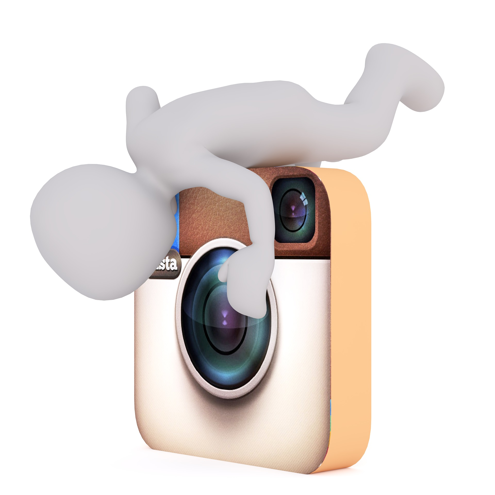

Video editing is a creative and technical process that transforms raw footage into a meaningful
and engaging visual story. It involves selecting the best clips, arranging them in a proper sequence,
and enhancing them using various tools and techniques. Through editing, simple recordings can be
converted into professional-quality videos that effectively communicate ideas and capture the
audience’s attention.
Modern video editing includes adding transitions, background music, sound effects, text overlays,
and color correction. These elements improve the visual appeal and overall quality of the video.
Editors focus on timing, pacing, and storytelling to ensure that the final output is smooth,
engaging, and impactful. Video editing also plays an important role in branding and digital marketing.
Professional tools such as Adobe Premiere Pro, Final Cut Pro, CapCut, Filmora, and DaVinci Resolve
provide advanced features for high-quality video production. Video editing is widely used in filmmaking,
advertisements, social media content, education, and event coverage. As digital media continues to grow,
video editing has become an essential skill and offers excellent career opportunities in today’s
creative industry.
Editing Tools

Video editing requires advanced software tools that help in creating high-quality
and professional videos. Editors can easily cut, arrange and enhance clips.
Popular tools include Adobe Premiere Pro, CapCut, Filmora and DaVinci Resolve.
These tools provide transitions, effects, color correction and audio editing.
They are widely used for YouTube, reels, movies and advertisements.